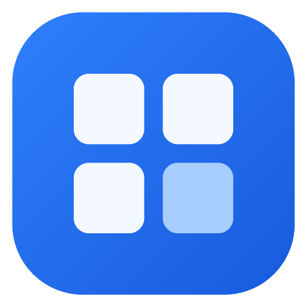

sonac launcher
파일을 동기화할 저장소에 로그인하세요.
저장소
Synology NAS
WebDAV 클라우드
DSM HTTPS 주소
사용자 이름
비밀번호
2단계 인증 사용
인증 앱의 OTP
이 PC에서 로그인 유지
로그인
sonac launcher
NAS · 파일 · Git을 한 곳에서
런처 편집 파일 동기화
모든 PC에서 같은 런처 구성을 사용
지금 동기화
런처 편집
File Station
×
↑
새로고침
파일 업로드
이 폴더 선택
이름
크기
수정일
동작
백업 · 동기화
클라우드에만 있는 파일을 이 PC로 다운로드합니다.
×
클라우드 폴더
찾아보기
이 PC의 폴더
찾아보기
자동 확인 간격
1분
5분
15분
30분
60분
자동 동기화
PC에 로그인하면 런처 시작
런처 편집
×
기본 바로가기
추가한 바로가기
+ 바로가기 추가
계정 및 연결
×
사용자
이 PC